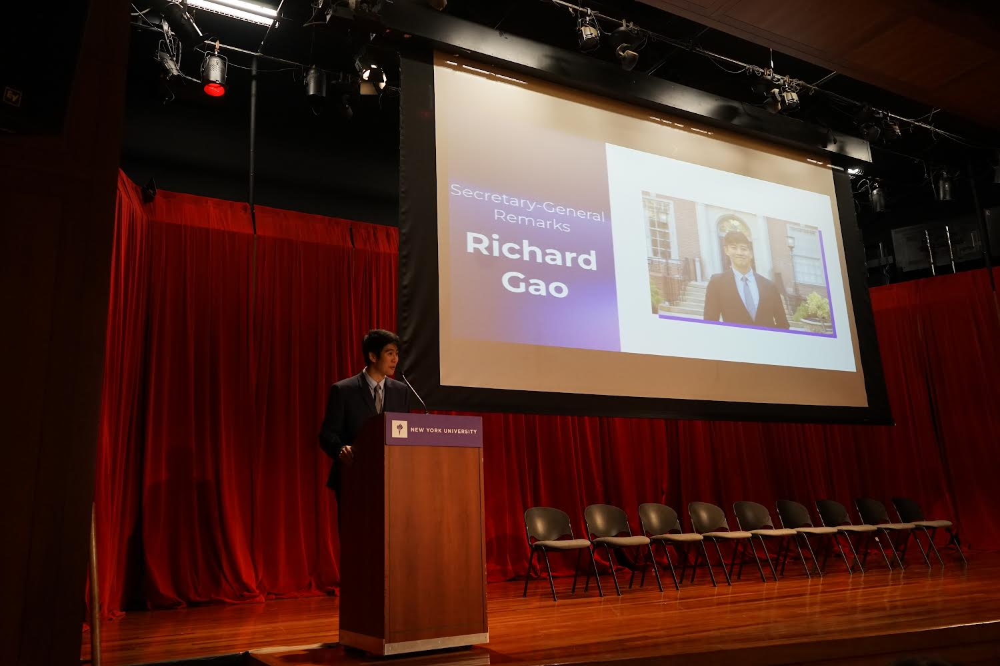

01 // ORIGINS
I'm originally from North Carolina, specifically Chapel Hill. It's where I lived for the first 18 years of my life before I decided to go to NYU for university, where I studied economics and political science.


02 // CURRENT
I'm 24 years old, and currently work in finance at an investment bank in New York City. Outside of work, I enjoy swimming, playing tennis, and performing violin in Central Park.
03 // PERSPECTIVE
Whether performing solo or for the community, I value the texture that music and storytelling add to a professional life in finance and law.